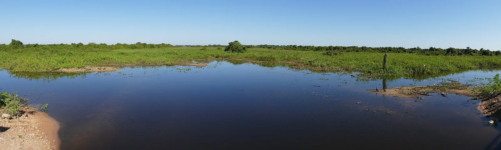
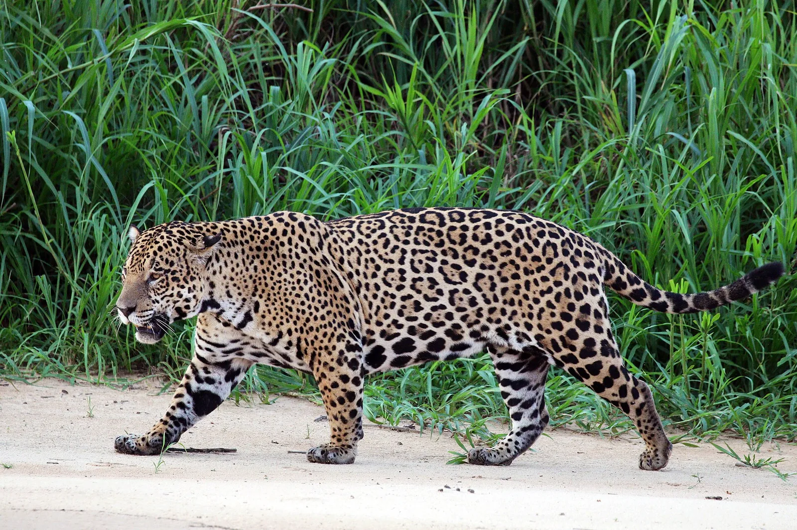
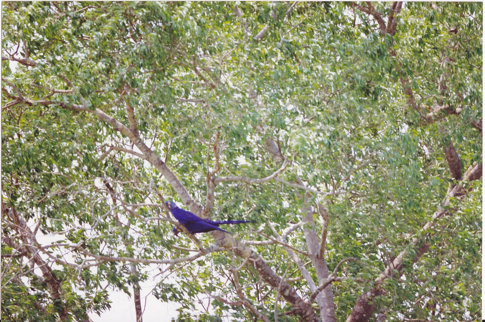
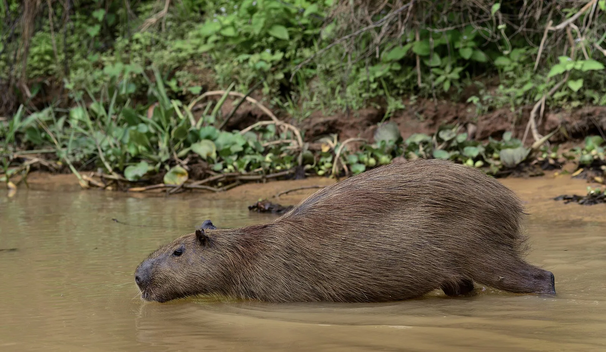
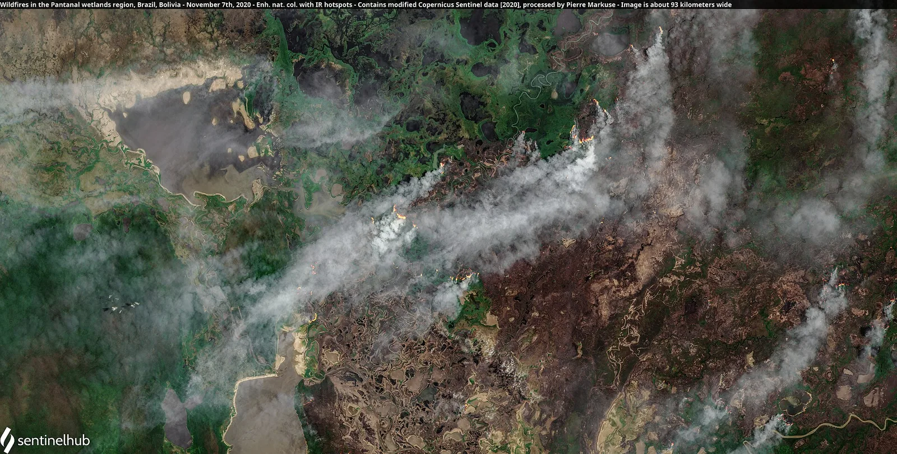

E2 · Este
E2 · Osten
E2 · East
Pantanal
Vi un pantano tan grande que le dicen el arca de Noé: ahí cabe casi todo lo que respira.
Ich sah einen Sumpf, so groß, dass sie ihn die Arche Noah nennen: dort hat fast alles Platz, was atmet.
I saw a marsh so vast they call it Noah's ark: almost everything that breathes fits there.
Información
El Pantanal es uno de los humedales de agua dulce más grandes del mundo: unos 14 millones de hectáreas. El sitio de Patrimonio Mundial protege 187.818 de ellas —el 1,3 % del Pantanal brasileño— en el extremo suroeste de Mato Grosso, sobre el límite con Bolivia y Paraguay, y reúne cuatro áreas protegidas contiguas.
Entre octubre y abril los ríos Cuiabá y Paraguay desbordan e inundan regiones enteras, y el agua reparte los nutrientes que sostienen la pesca de todo el humedal. La sierra del Amolar, de hasta 900 metros, corta esa llanura de golpe: el contraste entre lo inundable y la montaña es abrupto y no se repite en ninguna otra parte del Pantanal.
Ahí viven el tatú carreta, el oso hormiguero gigante, el lobo gargantilla, el ciervo de los pantanos y el guacamayo jacinto, el loro más grande del mundo. La población de yaguaretés del sitio es probablemente la mayor de todo el Pantanal.
Information
El Pantanal es uno de los humedales de agua dulce más grandes del mundo: unos 14 millones de hectáreas. El sitio de Patrimonio Mundial protege 187.818 de ellas —el 1,3 % del Pantanal brasileño— en el extremo suroeste de Mato Grosso, sobre el límite con Bolivia y Paraguay, y reúne cuatro áreas protegidas contiguas.
Entre octubre y abril los ríos Cuiabá y Paraguay desbordan e inundan regiones enteras, y el agua reparte los nutrientes que sostienen la pesca de todo el humedal. La sierra del Amolar, de hasta 900 metros, corta esa llanura de golpe: el contraste entre lo inundable y la montaña es abrupto y no se repite en ninguna otra parte del Pantanal.
Ahí viven el tatú carreta, el oso hormiguero gigante, el lobo gargantilla, el ciervo de los pantanos y el guacamayo jacinto, el loro más grande del mundo. La población de yaguaretés del sitio es probablemente la mayor de todo el Pantanal.
Information
El Pantanal es uno de los humedales de agua dulce más grandes del mundo: unos 14 millones de hectáreas. El sitio de Patrimonio Mundial protege 187.818 de ellas —el 1,3 % del Pantanal brasileño— en el extremo suroeste de Mato Grosso, sobre el límite con Bolivia y Paraguay, y reúne cuatro áreas protegidas contiguas.
Entre octubre y abril los ríos Cuiabá y Paraguay desbordan e inundan regiones enteras, y el agua reparte los nutrientes que sostienen la pesca de todo el humedal. La sierra del Amolar, de hasta 900 metros, corta esa llanura de golpe: el contraste entre lo inundable y la montaña es abrupto y no se repite en ninguna otra parte del Pantanal.
Ahí viven el tatú carreta, el oso hormiguero gigante, el lobo gargantilla, el ciervo de los pantanos y el guacamayo jacinto, el loro más grande del mundo. La población de yaguaretés del sitio es probablemente la mayor de todo el Pantanal.
El arca de Noé, ardiendo, durante meses.
Die Arche Noah, brennend, monatelang.
Noah's ark, burning, for months.
En 2020 el fuego arrasó unos 43.000 kilómetros cuadrados del Pantanal, alrededor del 28 % de la región, según el Observatorio de la Tierra de la NASA. Fue la temporada de incendios más extensa registrada en el humedal.
En 2020 el fuego arrasó unos 43.000 kilómetros cuadrados del Pantanal, alrededor del 28 % de la región, según el Observatorio de la Tierra de la NASA. Fue la temporada de incendios más extensa registrada en el humedal.
En 2020 el fuego arrasó unos 43.000 kilómetros cuadrados del Pantanal, alrededor del 28 % de la región, según el Observatorio de la Tierra de la NASA. Fue la temporada de incendios más extensa registrada en el humedal.
Galería
Galerie
Gallery





Fuentes
Quellen
Sources
- UNESCO, Centro del Patrimonio Mundial, Pantanal Conservation Area — https://whc.unesco.org/en/list/999/ consultado 2026-10-05abgerufen 2026-10-05accessed 2026-10-05
- NASA Earth Observatory, A Human Fingerprint on the Pantanal Inferno — https://earthobservatory.nasa.gov/images/149398/a-human-fingerprint-on-the-pantanal-inferno consultado 2026-10-05abgerufen 2026-10-05accessed 2026-10-05